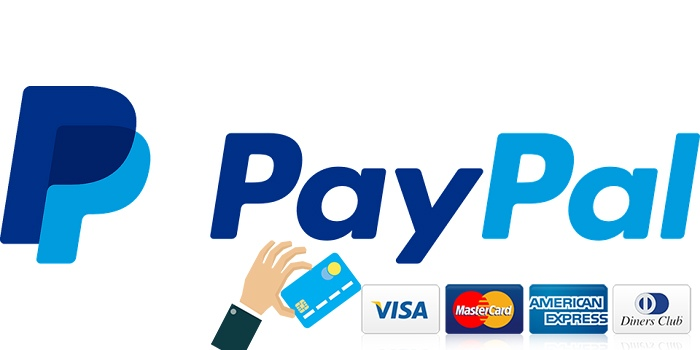
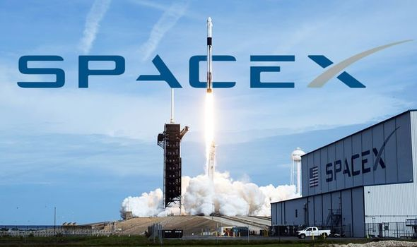
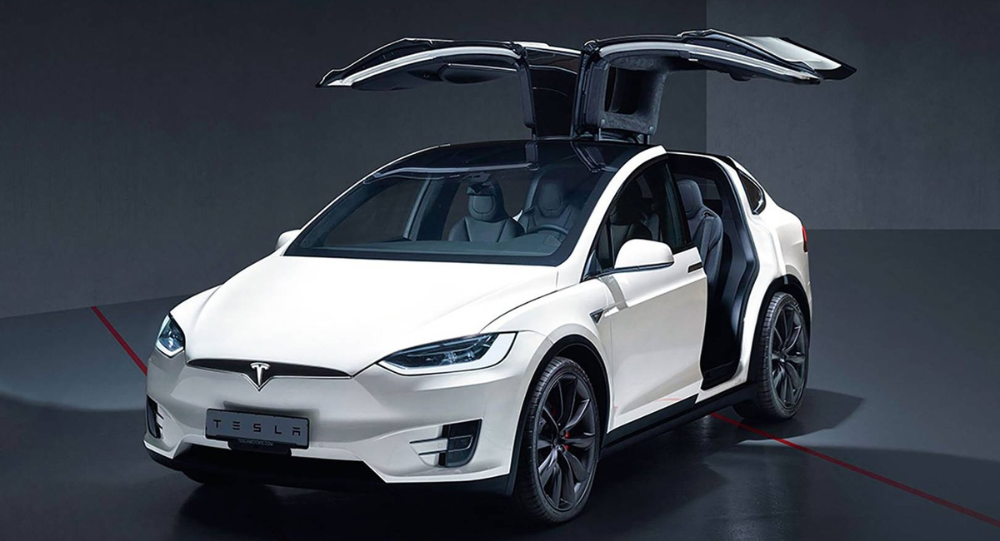

X.com и PayPal
В марте 1999 года Маск стал одним из основателей X.com. В 2000 году X.com произвела слияние с компанией Confinity, одним из продуктов которой был сервис для персональных денежных переводов PayPal. Маск решительно выступал за перевод разрабатываемого компанией программного обеспечения с UNIX под операционную систему Windows, что вызвало разногласия c техническим директором компании Максом Левчиным и другими руководителями, закончившиеся отставкой Маска с поста CEO (при этом он остался членом Совета директоров). Однако стратегическое решение Илона о слиянии двух компаний, наряду с активным продвижением электронной системы оплаты на Интернет-аукционах (в первую очередь, eBay), привело в 2001 году к быстрому росту предприятия, которое было окончательно переименовано в PayPal. Столь внушительные успехи позволили компании произвести размещение акций на бирже в феврале 2002 года (и при этом стать первой из дотком-компаний, вышедших на биржу после террористических актов 11 сентября 2001 года). В октябре 2002 года PayPal была куплена eBay за 1,5 млрд долларов США. На момент продажи Маску принадлежали 11,7 % акций компании, что позволило ему выручить 180 млн долларов.
SpaceX
В мае 2002 года Маск основал свою третью компанию — SpaceX. Она является частным разработчиком серии ракет-носителей и коммерческим оператором космических систем. В декабре 2008 года НАСА подписало с компанией контракт на сумму 1,6 млрд долларов США на 12 запусков носителя Falcon 9 и космического корабля Dragon к МКС, в качестве замены кораблей Space Shuttle после прекращения программы их запуска в 2011 году. По утверждению самого Илона, большое влияние на него оказал цикл научно-фантастических романов «Основание» и взгляды Айзека Азимова на освоение космического пространства как развитие и сохранение человеческого бытия. Маск утверждал, что охват жизнью нескольких планет может служить защитой от угрозы исчезновения человечества. Илон Маск поставил перед собой цель — в 10 раз уменьшить затраты на космические полёты. Для этого он основал SpaceX, вложив в неё 100 миллионов долларов, полученных от продажи своих предыдущих компаний. В январе 2016 года на инвестиционном форуме в Гонконге Маск сообщил о том, что его компания надеется осуществить полёт на Марс в 2020—2025 годах. сентябре 2017 года Илон Маск выложил в своем Instagram видео, рассказывающее о новой идее использования ракет SpaceX. Заключается она в том, чтобы использовать ракеты и космические корабли для полётов в любую точку Земли вместо самолётов. 30 мая 2020 года состоялся пилотируемый полет космического корабля Илона Маска под названием Crew Dragon. Первая ступень Falcon 9 успешно вернулась на Землю и приземлилась на плавучую платформу в Атлантическом океане через 10 минут после старта. Корабль успешно вышел на орбиту и состыковался с МКС.
Tesla
Американская компания, производитель электромобилей и (через свой филиал SolarCity) решений для хранения электрической энергии. В марте 2018 года акционеры компании проголосовали за повышение зарплаты Илону Маску до 3 млрд долларов в год. У него не останется фиксированного оклада, вместо этого он получит компенсацию в виде акций компании. Выплата компенсации будет зависеть от того, достигнет ли компания необходимых финансовых показателей. В октябре 2019 года Илон Маск заявил о том, что Tesla вышла в прибыль, а котировки акций компании поднялись на 20 %.